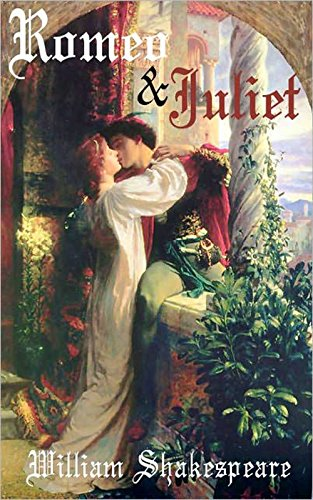
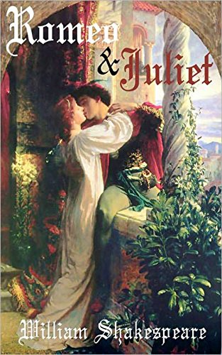

WILLIAM SHAKESPEARE
William Shakespeare (1564-1616) fue un renombrado dramaturgo, poeta y actor inglés, considerado uno de los más grandes escritores de la literatura mundial. Nacido en Stratford-upon-Avon, Inglaterra, es conocido por su vasta obra literaria, que incluye 39 obras de teatro y más de 150 sonetos. Sus obras, como "Romeo y Julieta", "Macbeth", "Hamlet" y "Otelo", son consideradas clásicos de la literatura universal y han sido traducidas a numerosos idiomas. Shakespeare es conocido por su habilidad en la creación de personajes complejos, su uso innovador del lenguaje y su profundo entendimiento de la naturaleza humana. Sin embargo, gran parte de su vida y biografía sigue siendo objeto de especulación y misterio. Aunque vivió hace más de 400 años, su legado literario perdura en la actualidad, siendo estudiado, representado y apreciado en todo el mundo como uno de los más grandes escritores de la historia.
 
